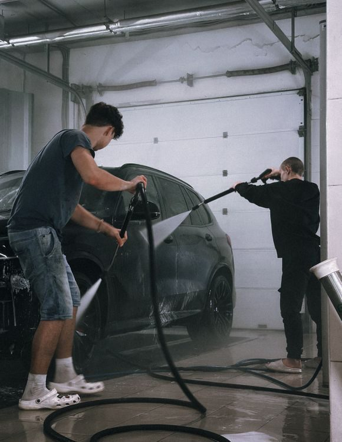
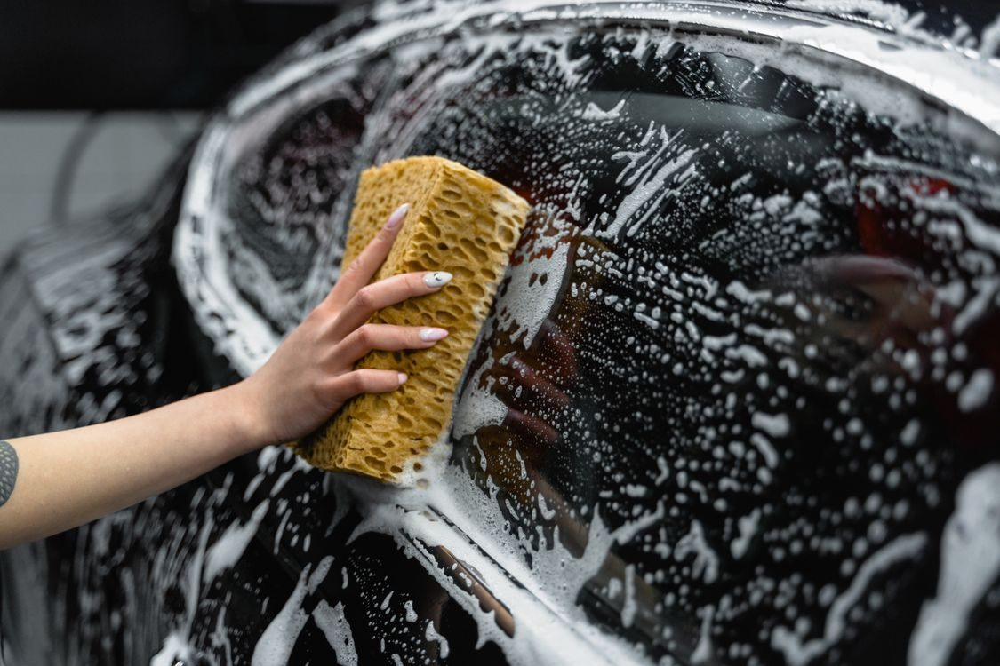

A detailing shop in Fort Worth
The Vallin Shop, listed as Complete Auto Car Care, offers auto detailing, auto body work, and automotive repair on South Riverside Drive.

The Vallin Shop sits at 358 South Riverside Drive in Fort Worth. The shop is listed as Complete Auto Car Care, covering auto detailing, auto body work, and automotive repair. No detailed service list is published.

358 S Riverside Dr, Fort Worth, TX
Monday to Friday, 9:00 AM to 6:00 PM; Saturday, 9:00 AM to 3:00 PM